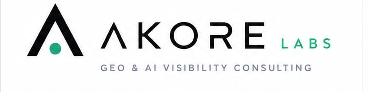
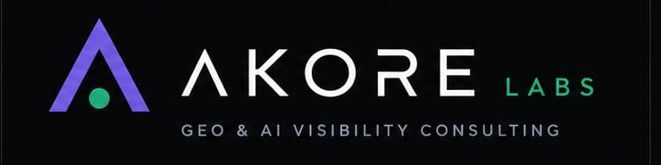
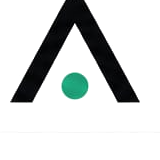
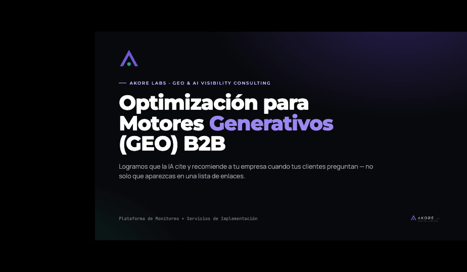
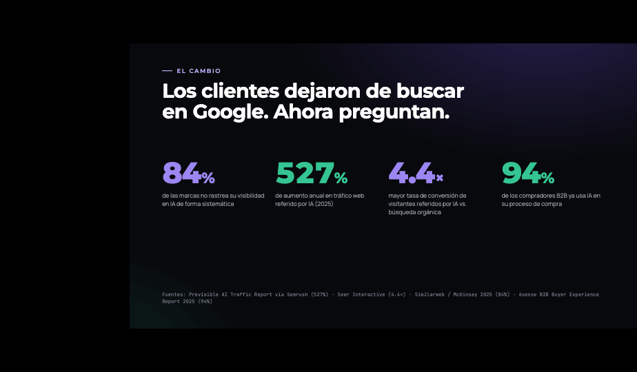
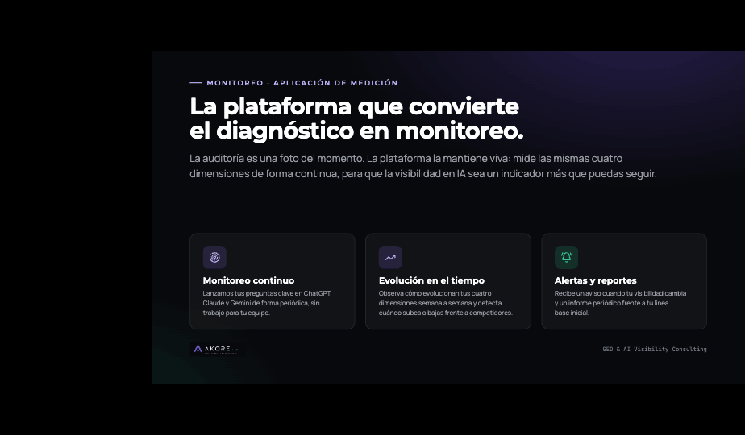
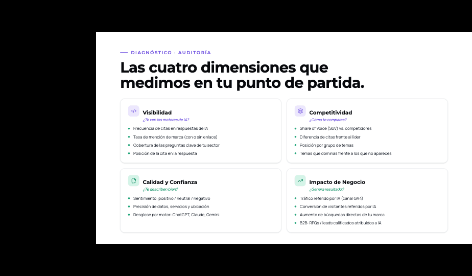
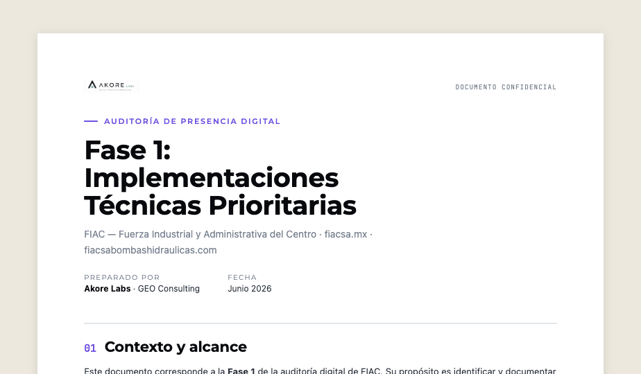

Personality
- Confident, plain-spoken, consultative
- Sells a system, not hype
- Precise and credible — never "AI-slop"

Brand & Design System · v1The visual language of Akore Labs — logo, colour, type, components and real examples in use.
Akore Labs is a Mexico-based agency for GEO (Generative Engine Optimization) and AI-visibility consulting — making brands the source that AI answer engines cite and recommend. The identity is modern, elegant and tech-first: a violet locator "A" with an emerald dot, on a near-black ground.
The mark is a violet chevron "A" (no crossbar) with an emerald locator dot — a letter, an upward arrow and a map pin at once. Never redraw it; always use the supplied assets. Use dark-theme lockups on dark grounds, light-theme on light.


Horizontal · stacked · icon mark — dark and light themes.
Two brand colours — violet (primary) and emerald (accent, used sparingly, the "dot") — on a cool near-black ink ground with cool-slate neutrals. Maximum one to two background colours per artifact.
Display = Montserrat (geometric caps, tracked — mirrors the wordmark). Body/UI = Manrope. Data/technical = JetBrains Mono. Note: Google-Font substitutes for the wordmark's custom lettering — pending licensed brand fonts.
We make your brand the source AI engines cite — not just a link three results down. Clear, credible, human copy.
Reusable primitives share one calm system: pill buttons and badges, 16px cards with hairline borders and low cool shadows, the tracked eyebrow label, and large display metrics.
We make your brand the source AI engines cite.
Average lift across GEO engagements in 90 days.
The GEO B2B pitch deck and the client audit report, built entirely from these foundations.

Pitch deck · Portada — dark ground with violet glow, mark, tracked eyebrow.

Stats — El Cambio

Plataforma de monitoreo
¿Qué es GEO? — light layout

Las cuatro dimensiones

Client audit report — FIACSA Fase 1, on the same type & colour system.